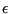
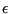

Next: Error estimators Up: Loading Previous: Convective heat flux Contents
Radiative heat flux is a flux depending on the temperature of the body and is triggered by the *RADIATE card. No external medium is needed. If other bodies are present, an interaction takes place. This is called cavity radiation. Usually, it is not possible to model all bodies in the environment. Then, a homogeneous environmental body temperature can be defined. In that case, the radiative flux takes the form
| (614) |
where  is a flux normal to the surface,  is the emissivity,
is a flux normal to the surface,  is the emissivity,
 is the absolute body temperature (Kelvin) and
is the absolute body temperature (Kelvin) and  is the
absolute environment temperature (also called sink temperature). The
emissivity takes values between 0 and 1. A zero value applied to a body with
no absorption nor emission and 100
is the
absolute environment temperature (also called sink temperature). The
emissivity takes values between 0 and 1. A zero value applied to a body with
no absorption nor emission and 100  reflection. A value of 1 applies to a
black body. The radiation is assumed to be diffuse (independent of the
direction of emission) and gray (independent of the emitted wave
length).
reflection. A value of 1 applies to a
black body. The radiation is assumed to be diffuse (independent of the
direction of emission) and gray (independent of the emitted wave
length).
If other bodies are present, the radiative interaction is taken into account and viewfactors are calculated if the user selects the appropriate load label.